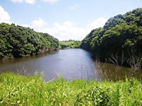

千葉県印西市を流れる川、亀成川とその源流域は、首都圏にありながら、豊かな生態系に恵まれ、オオタカ、サシバなどの猛禽類から、タナゴ、スナヤツメなどの魚類、ホタルなどの昆虫や植物に至るまで、さまざまな貴重種が生息し、環境省「日本の重要湿地５００」に選定されています。
特に源流域は、ニュータウン開発の造成が行われたところも、30年以上そのままになっていたため、草地、樹林地、湿地、谷津田に絞り水がたまってできた池など、多様な環境が連続性を持って混在し、生物多様性の宝庫となっています。
また景観としても首都圏では類を見ないほどの素晴らしい里山景観が残っています。
